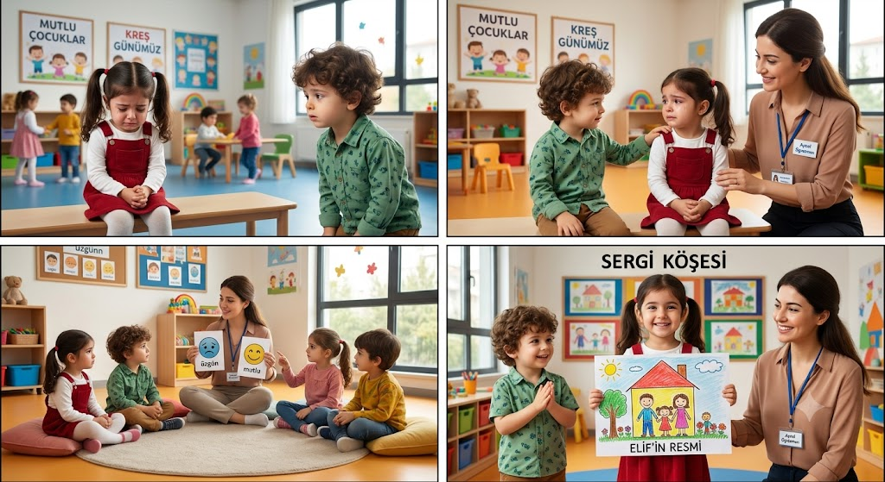

Geleceğin Bireylerini Yetiştiren Çağdaş Müfredatlar
Dünya standartlarına uygun, deney ve gözlem odaklı müfredatlar ezber yerine keşfi önceler. Bu yaklaşım çocukların merak duygusunu, sorgulama becerisini ve bağımsız düşünme yetisini geliştirir. Öğretmen ve ailelerin sabırlı ve destekleyici tutumu, bu sürecin başarısında kritik rol oynar.
Nitelikli çorlu anaokulu ortamları, çocukların zihinsel kapasitelerini artırmanın yanı sıra sosyal ilişkiler kurmalarını sağlayarak toplumla uyumlu bireyler olmalarına zemin hazırlar. Düzenli gelişim takibi, olası öğrenme güçlüklerinin erken tespiti ve müdahalesi için önemlidir.
Erken Yaşta İngilizce — Çift Dilli Yaklaşım
Yabancı dil öğrenimi, okul öncesi yaşlarda oyun, şarkı ve günlük etkileşimler aracılığıyla en doğal şekilde gerçekleşir. Ders anlatımına dayalı yöntemlerden ziyade dil maruziyeti ve oyun temelli etkinlikler etkilidir.
Çift dilli yetişen çocuklar zihinsel esneklik ve odaklanma konusunda avantaj kazanır; bu da ileride akademik başarıya olumlu yansır. Çorlu özel anaokulu programları arasında bu yaklaşımı uygulayan kurumlar bulunmaktadır.
STEM ve Doğa Temelli Keşif Atölyeleri
Basit maketler, deneyler ve problem çözme odaklı etkinliklerle kurgulanan STEM çalışmaları; çocuklara neden-sonuç ilişkisini, analitik düşünmeyi ve yaratıcılığı öğretir. Doğa atölyeleri ise ekolojik farkındalık kazandırır ve çocukların çevreye saygı geliştirmesine yardımcı olur.
Ekolojik Bahçe Çalışmaları ve Toprakla Temas
Toprakla çalışmak çocuklara sabrı, sorumluluğu ve emeğin değerini öğretir. Açık hava etkinlikleri fiziksel gelişimi ve bağışıklık sistemini destekler; şehir yaşamındaki betonlaşmanın yarattığı uzaklaşmayı gidermeye yardımcı olur.

Sıkça Sorulan Sorular (SSS)
Erken yaşta yabancı dil kafa karıştırır mı?
Hayır. Araştırmalar gösterir ki çocuk beyni aynı anda birden fazla dili öğrenme esnekliğine sahiptir; erken maruziyet genellikle avantaj sağlar.
Oryantasyon kaç gün sürmelidir?
Kademeli bir adaptasyon en sağlıklısıdır; çoğu kurumda 1–2 haftalık bir geçiş planı uygulanır.
Sonuç ve Genel Değerlendirme
Doğru okul öncesi kurum seçimi, çocuğunuzun gelecekteki öğrenme deneyimlerine ve sosyal gelişimine güçlü bir temel sağlar. Müfredatın niteliği, öğretmen kadrosu, sınıf-kampüs ortamı ve gelişim takibi kriterleri incelenerek bilinçli bir karar verin.
Daha fazla bilgi ya da kayıt için: info@corluanaokulu.org